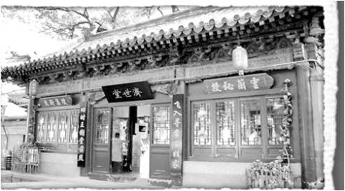

历
史
典
故
HISTORICALALLUSION

1897年朱济世仙逝，其爱徒宋文彦重回家乡，其从小跟师学医，医学药典，古方奇方，烂熟于心。他以其独特的医术深刻钻研，在白灵丹原有的药材上，细心、耐心，经过不断地实验，终于研制出一套完美的“白灵丹”药方。以其妙手仁心在十里八乡备受爱戴，因其排行为七，故人称七爷。
白灵丹主要功效，治愈烧伤、炮伤、电烧伤、化学伤等，愈合后不留疤痕，并且不怕感染，药物有抑制细菌微生物生长的效果，细菌微生物很难在其中滋生，从而保障了创面的无菌生长环境；1898年，一代神医宋文彦仙逝，将其穷尽一生钻研出的白灵丹湿润烧伤膏传承了下去。他曾说：“但愿世间人无事，哪怕架上药生尘”；这是一位医者对百姓的仁爱之心，也是对自己的期望，希望自己可以可以医尽天下人，惟愿世人百姓安康。白灵丹经历了百年历史的见证，其医治患者不下数10万人，其去腐生肌、消炎止疼、杀菌、促进创面愈合、治愈后不留疤痕的效果被广大患者啧啧称奇。现在其医术传承人名声享誉陕西咸阳，在当地乃至周边地区也是人尽皆知。